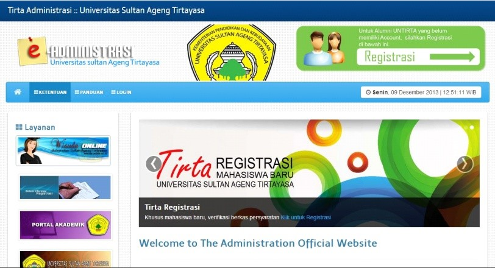
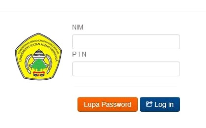
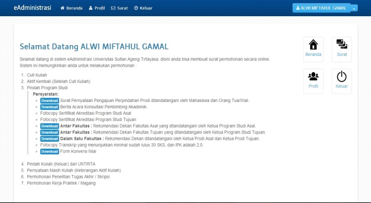
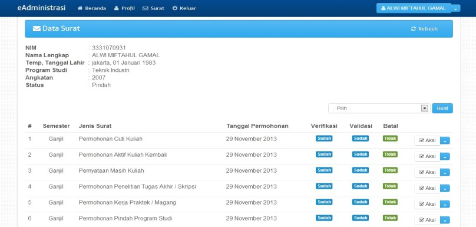

BAB 4 PENGAJUAN IJIN CUTI KULIAH
Ketentuan pengajuan permohonan ijin cuti kuliah sebagai penjelasan dari Pedoman Akademik. Setiap Mahasiswa Untirta yang tidak berencana untuk mengambil kuliah pada semester yang berikutnya wajib mengetahui ketentuan dan melakukan prosedur cuti kuliah. Prosedur ini diambil untuk menghindarkan mahasiswa dari sanksi akademik dicutikan. Pada prosesnya prosedur ini melibatkan 6 (enam) entitas:
- Mahasiswa
- Bank
- Jurusan/Program Studi/Fakultas/Pascasarjana
- Subbagian Registrasi dan Statistik, BAKP – Wakil Rektor Bidang Akademik
- Subbagian PNBP, BUKK
- Pusat Data dan Informasi (PUSDAINFO).
4.1 Ketentuan Pengajuan Cuti Kuliah
- Selama ijin cuti kuliah dibebaskan dari pembayaran SPP/UKT, tetapi diwajibkan membayar uang registrasi biaya cuti kuliah yang besarannya ditetapkan oleh Keputusan Rektor, pembayaran sesuai dengan bank yang ditunjuk.
- Masa ijin cuti kuliah tidak diperhitungkan dalam batas waktu maksimal penyelesian studi, sesuai dengan Pedoman Akademik tahun 2021.
- Hak Cuti kuliah maksimal 2 (dua) semester, baik secara berturut-turut maupun secara terpisah.
- Pengajuan ijin cuti kuliah diperkenankan apabila minimal telah menyelesaikan studi 2 (dua) semester dan maksimal semester 12 (dua belas).
- Alasan cuti kuliah yang rasional (reasonable)
- Pengajuan ijin cuti kuliah setelah kegiatan perkuliahan dimulai tidak akan dilayani dan tidak akan diproses.
- Permohonan Ijin cuti kuliah dilakukan secara online pada aplikasi https://eadministrasi.untirta.ac.id/ diproses oleh Jurusan/Prodi/Fakultas/Pascasarjana untuk diverifikasi dan diproses juga oleh Subbagian Registrasi dan Statistik Biro Akademik, Kemahasiswaan, dan Perencanaan (BAKP) untuk divalidasi dan dicetak serta ditandatangani oleh Wakil Rektor Bidang Akademik.
- Setelah batas waktu ijin Cuti Kuliah berakhir mahasiswa harus segera mengajukan permohonan aktif kuliah kembali secara online pada aplikasi https://eadministrasi.untirta.ac.id/ dan diproses oleh Prodi untuk diverifikasi dan diproses juga oleh Subbagian Registrasi dan Statistik Biro Akademik, Kemahasiswaan, dan Perencanaan (BAKP) untuk divalidasi dan dicetak serta ditandatangani oleh Wakil Rektor Bidang Akademik.
4.2 Waktu Registrasi (3)
Mahasiswa yang melakukan permohonan cuti kuliah mengacu pada ketentuan yang telah dituangkan dalam kalender akademik baik pada semester gasal diajukan sebelum kegiatan perkuliahan semester gasal maupun pada semester genap sebelum kegiatan perkuliahan semester genap, sehingga mahasiswa sudah mempunyai dasar dan gambaran yang pasti akan waktu pelaksanaan kegiatan cuti dan waktu pelaksanaan kegiatan aktif kuliah kembali.
4.3 Prosedur Pengajuan Cuti Kuliah
Mahasiswa
Prosedur lengkap pengambilan cuti kuliah oleh mahasiswa adalah sebagai berikut:
Mahasiswa membuka laman http://eadministrasi.untirta.ac.idKlik Login.

Mahasiswa menginput username (NIM) dan password (enam angka terakhir NIM) dan masuk ke halaman login.

Klik Surat di laman bagian kanan atas.

Mahasiswa akan dihadapkan pada Data Surat dan status Verifikasi dan Validasinya. Klik pilih – cuti kuliah, lalu Klik Buat.

Mahasiswa berada di laman Tambah Permohonan, isikan Semester Depan dimana mahasiswa cuti dan pilih alasan cuti lalu Klik Simpan. Klik Aksi Cetak Bukti Permohonan. Lalu Klik Keluar.
Mahasiswa ke Subbagian PNBP untuk mengubah tagihan UKT/SPP ke tagihan cuti.
Mahasiswa membayar biaya Cuti kuliah yang ditetapkan dalam Keputusan Rektor ke Bank yang telah ditunjuk dan mendapatkan legalisasi Cetak Bukti Permohonan Cuti dan menyerahkan legalisasi ke Prodi/Fakultas.
Mahasiswa mengecek status surat dengan cara log in kembali. Jika status surat sudah diverifikasi dan divalidasi, maka mahasiswa dapat meminta Surat Ijin Cuti di BAKP.
Jurusan/Program Studi/Fakultas/Pascasarjana
- Jurusan/Program Studi/Fakultas/Pascasarjana menerima Cetak Bukti Permohonan Cuti yang sudah dilegalisasi pihak Bank.
- Jurusan/Program Studi/Fakultas/Pascasarjana log in ke laman admin, memeriksa status mahasiswa, dan memberikan verifikasi atas permohonan cuti mahasiswa.
Biro Akademik, Kemahasiswaan, dan Perencanaan (BAKP)
Biro Akademik, Kemahasiswaan dan Perencanaan (BAKP) melalui Subbagian Registrasi dan Statistik memproses Pengajuan Ijin Cuti Kuliah yang telah memenuhi persyaratan.
- Log in ke laman admin, memeriksa status mahasiswa, dan memberikan validasi atas permohonan cuti mahasiswa.
- Mencetak Surat Ijin Cuti dan meminta tanda tangan Wakil Rektor Bidang Akademik.
- Menyerahkan Surat Ijin Cuti kepada mahasiswa yang mengajukan permohonan. Tembusan diberikan ke PNBP, Pusdainfo, dan Prodi/Fakultas/Pascasarjana.
- Mendokumentasikan/mengarsipkan Surat Ijin Cuti.
Mahasiswa
Mahasiswa mengambil Surat Cuti yang telah ditandatangani Wakil Rektor Bidang Akademik di Subbagian Registrasi dan Statistik.
Pusdainfo (Pusat Data dan Informasi)
Pusat Data dan Informasi (Pusdainfo) mengubah status data mahasiswa dari mahasiswa aktif kuliah menjadi mahasiswa cuti kuliah di semester yang bersangkutan.
4.4 Petugas Registrasi (3)
Petugas Registrasi yang terkait dalam pelaksanaan tersebut melibatkan:
Biro Akademik, Kemahasiswaan, dan Perencanaan (BAKP)
Biro Akademik, Kemahasiswaan dan Perencanaan (BAKP) Universitas Sultan Ageng Tirtayasa melalui Subbagian Registrasi dan Statistik melaksanakan tugasnya melayani mahasiswa melakukan permononan cuti kuliah, mendokumentasikan laporan, dan melakukan koordinasi dengan Subbagian Penerimaan Negara Bukan Pajak (PNBP), Pusat Data dan Informasi (PUSDAINFO), Jurusan/Prodi/Fakultas dan Subbagian Akademik Pascasarjana.
Biro Umum, Keuangan dan Kepegawaian (BUKK).
Biro Umum, Keuangan, dan Kepegawaian (BUKK) Universitas Sultan Ageng Tirtayasa melaksanakan tugasnya sebagai biro yang menangani bidang keuangan melalui Subbagian Penerimaan Negara Bukan Pajak (PNBP) yang ditugaskan melayani mahasiswa yang melakukan permohonan cuti kuliah: Memberikan verifikasi/surat pengantar pembayaran cuti kuliah kepada mahasiswa yang melakukan permohonan cuti kuliah dan persyaratan akademik sudah dilengkapi, mendokumentasikan laporan, melakukan koordinasi dengan Subbagian Registrasi dan Statistik (BAKP), Pusat Data dan Informasi (PUSDAINFO), Subbagian Akademik Pascasarjana, Jurusan/Prodi/Fakultas dan petugas bank yang ditunjuk Bank BNI.
Bank (Bank yang ditunjuk adalah Bank Negara Indonesia/BNI)
Melaksanakan tugasnya sebagai Bank yang ditunjuk oleh Universitas Sultan Ageng Tirtayasa sebagai Bank yang menerima pembayaran mahasiswa yang melakukan cuti kuliah, melaksanakan koordinasi dengan Subbagian Penerimaan Negara Bukan Pajak (PNBP), Subbagian Registrasi dan Statistik (BAKP), Pusat Data dan Informasi (PUSDAINFO), dan Subbagian Akademik Pascasarjana.
Pusat Data dan Informasi (PUSDAINFO)
Pusat Data dan Informasi (PUSDAINFO) menerima data mahasiswa yang telah mengajukan permohonan cuti kuliah, mengubah status mahasiswa menjadi cuti kuliah, mendokumentasikan laporan, melaksanakan koordinasi dengan Subbagian Penerimaan Negara Bukan Pajak (PNBP), Subbagian Registrasi dan Statistik, Jurusan/Prodi/Fakultas, Subbagian Akademik Pascasarjana, dan petugas bank yang ditunjuk yaitu Bank BNI.
Program Studi/Fakultas/Pascasarjana
Program Studi/Fakultas/Pascasarjana menerima data yang telah divalidasi dan dicetak surat cuti kuliah serta sudah ditandatangani oleh Wakil Rektor Bidang Akademik / sudah disetujui, mendokumentasikan laporan, melaksanakan koordinasi dengan Subbagian Penerimaan Negara Bukan Pajak (PNBP), Subbagian Registrasi dan Statistik, dan Pusat Data dan Informasi (PUSDAINFO).

Diagram Alir Permohonan Cuti Kuliah